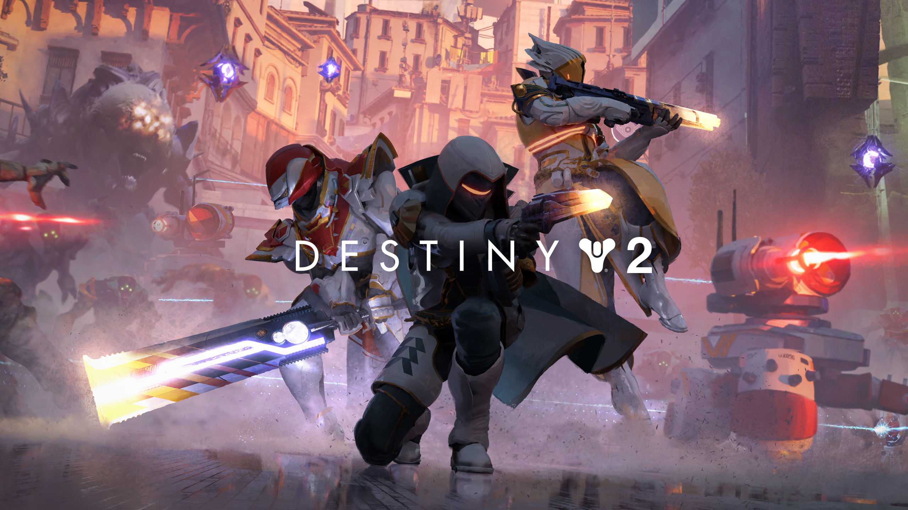
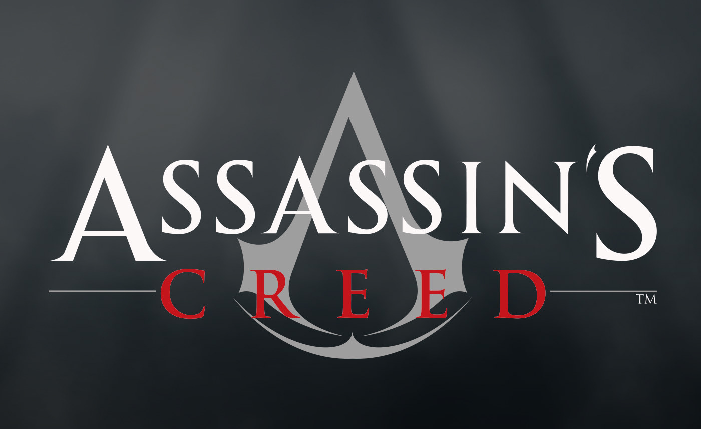

Hola aqui te mostrare mis juegos que me gustan son un monton que me gustan XD, pero solo mostrare 10 que me gustan que para los volveria a jugar una y otra y otra vez :3 asi y dare mi puntuacion y de que trata el juego
Mario galaxy es un juego muy hermoso y es el juego que le tengo carriño.
Super Mario Galaxy 1 trata sobre la aventura espacial de Mario para rescatar a la Princesa Peach de las garras de Bowser, explorando diferentes galaxias y recolectando estrellas para desbloquear nuevos niveles. El juego combina una jugabilidad innovadora con un diseño colorido y emocionante, convirtiéndolo en una experiencia divertida para los fanáticos de los juegos de plataformas. MI puntuacion:10/10
Dead Cells fue mi regalo de davidad y fue el regalo que quise :"D.
Dead Cells trata sobre la supervivencia y la exploración en un mundo lleno de peligros, desafíos y secretos por descubrir. Con su combinación de acción frenética, generación procedural y elementos de mejora de personaje, el juego ofrece una experiencia emocionante y desafiante para los amantes de los juegos de plataformas y aventuras.Mi puntuacion es 10/10

Call of duty Black ops 2 fue uno de los juegos donde comparti momentos de risa y es uno de los juego que domino y cuando alguien me pide jugar en la pley es el primer juego que pongo para hacer un pvp a franco :3
Call of Duty: Black Ops 2 es un videojuego de acción en primera persona que combina elementos de la Guerra Fría y la guerra moderna. Ofrece una campaña para un solo jugador con una narrativa ramificada, un modo multijugador en línea y un modo cooperativo "Zombies".

For Honor es mi juego favorito de la medieval donde mete mis tres faciones favoritas Caballeros, Samurais y Vikingos el que uso mas seguido son los caballero es el mas facil de usar
For Honor es un videojuego de acción y combate desarrollado por Ubisoft. El juego se ambienta en un mundo ficticio donde tres facciones de guerreros, los Caballeros, los Vikingos y los Samuráis, se enfrentan en una épica batalla por la supervivencia.

destiny es el juego que le e dedicado mas horas por que es de estar farmiando armas y trajes por eso le e dedicado un chingo de horas XD
El juego se desarrolla en un mundo de ciencia ficción donde los jugadores asumen el papel de "Los Guardianes", seres con habilidades especiales que protegen a la última ciudad segura de la Tierra de diversas amenazas alienígenas. Los Guardianes viajan a través de planetas y lunas para derrotar enemigos, completar misiones, enfrentarse a jefes y adquirir equipo.
Este es el juego que mas sagas que e jugado me e jugado todas las entregas de la ps3 y actual mente estoy jugando Assassins Creed Unity
La saga de Assassin's Creed es una serie de videojuegos de acción-aventura desarrollada por Ubisoft. La trama principal de la saga gira en torno a la eterna lucha entre los Asesinos, defensores de la libertad y la justicia, y los Templarios, que buscan control y dominio.
tom raider es bueno y me gusto que me compre las dos ultimas entregas con sus DLC la primera entrega la jugue en la ps3
trata sobre las aventuras de Lara Croft, una arqueóloga y aventurera intrépida.

es un buen juego de pele sus diseño de personajes sus historias y sus sontrak son hermosos
es un videojuego de pelea en 2D aclamado por su estilo visual y su jugabilidad rápida. El juego fue desarrollado por Reverge Labs, Lab Zero Games y Hidden Variable Studios

Me gusta mucho este juego su pistas su musica me encanta hay muchos personajes para elegir y es un buen juego para jugar con tus amigos
Mario kart 8 es un juego de carreras con muchas pistas y muchos personajes es un juego ideal para pasarla bien con tus amigos o perder amistades XD

este juego es hermoso su mundo abierto sus enemigos las peleas los tesoros y su historia
es aclamado por su mundo abierto, su jugabilidad innovadora y su hermoso diseño visual. Si te gustan los juegos de acción y aventura con una historia épica y una amplia exploración, ¡este juego podría ser perfecto para ti!